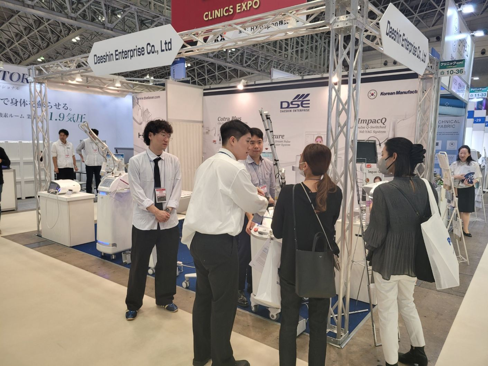

일본 Medical Japan 2023, 의료기기 기업과 함께

- 기간
- 2023.10.11–10.13
- 장소
- 도쿄 (마쿠하리 멧세)
- 분야
- 의료기기
- 참여 기업
- 대신엔터프라이즈
현장에서 한 일
일본 최대 건강·의료기기 전시회 중 하나에 미용 의료기기 제조업체 대신엔터프라이즈와 참가했습니다. 학생 2명이 사전 교육과 이전 전시회 경험을 바탕으로 바이어 응대와 거래 촉진을 이끌었습니다.
참여 학생의 경험
경영학과 최현락 학생은 한국 의료기기의 우수성을 실감했고, 메카트로닉스공학과 김성권 학생은 공학도로서 해외영업을 경험하며 시야를 넓혔다고 전했습니다.
출처: 한국공학대학교 대학소식 · 2023.10.23
전체 기록 보기